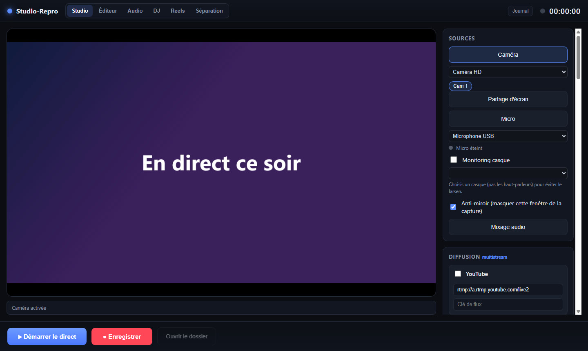
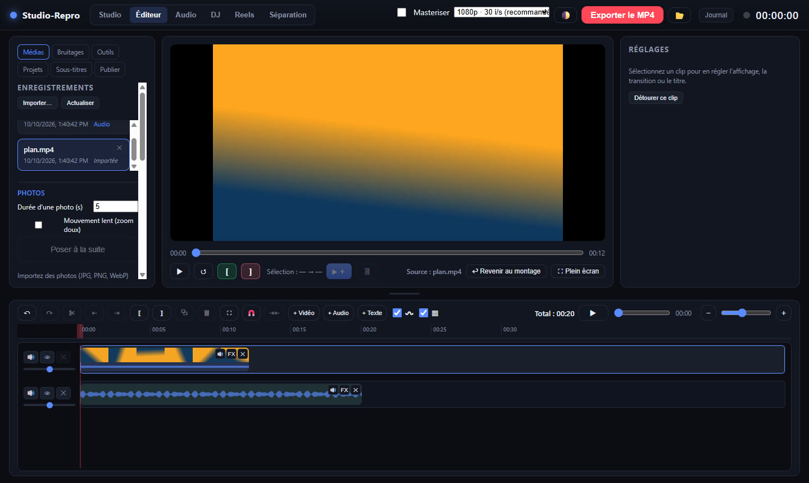
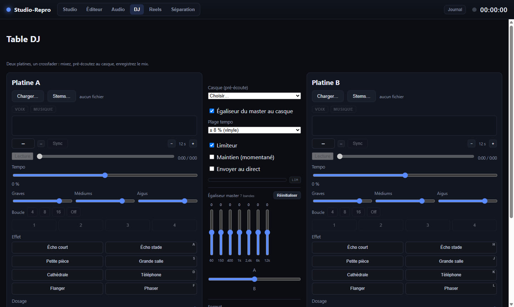

Studio vidéo pour Windows
Diffusez, enregistrez et montez — dans un seul logiciel.
Studio-Repro réunit le direct sur YouTube, Facebook et LinkedIn en même temps, l'enregistrement, le montage, les sous-titres et la musique. L'enregistrement, le montage et la transcription se font sur votre ordinateur : vos vidéos restent chez vous.

Tout ce qu'il faut, de la caméra à la publication
Studio-Repro remplace la pile habituelle de logiciels : logiciel de direct, enregistreur, monteur, outil de sous-titres et lecteur de musique.
Multistream
Un seul direct envoyé à YouTube, Facebook et LinkedIn en même temps, avec scènes, bandeaux, compte à rebours et encodage par la carte graphique.
Invités par simple lien
Vos invités rejoignent le direct depuis leur navigateur, sans rien installer. Plusieurs caméras, téléprompteur et replay instantané.
Son de qualité studio
Table de mixage, égaliseur 7 bandes, débruitage du micro par IA, limiteur et mastering automatique de vos enregistrements.
Éditeur multipiste
Plusieurs pistes vidéo, audio et texte, transitions, titres animés, keyframes, photos en diaporama, bruitages et export jusqu'en 4K.
Sous-titres automatiques
Transcription sur votre ordinateur, traduction en anglais et en espagnol (avec votre clé d'un service d'IA), sous-titres incrustés mot par mot.
Table DJ et séparation
Deux platines avec synchronisation du tempo, et séparation de la voix et des instruments d'un morceau.

Un éditeur pensé pour aller vite
Glissez vos vidéos, photos et musiques sur la timeline : Studio-Repro reconnaît le type de chaque média et crée la bonne piste tout seul.
- Couper, rogner, coller, annuler à volonté
- Détourage sans fond vert, couleur d'un vêtement
- Version verticale pour les Shorts et Reels
- Publication directe sur YouTube
La musique au cœur du direct
Mixez en direct avec deux platines, des effets, des boucles et la pré-écoute au casque — ou isolez la voix d'un morceau pour un karaoké.

Un prix simple
Toutes les fonctions, dans les deux formules. Commencez par 14 jours d'essai complet, sans carte bancaire.
Mensuel
- Toutes les fonctions
- Mises à jour incluses
- Jusqu'à 2 ordinateurs par licence
- Résiliable à tout moment
Annuel
- Toutes les fonctions
- Mises à jour incluses
- Jusqu'à 2 ordinateurs par licence
- Résiliable à tout moment
Les paiements sont traités par Lemon Squeezy, revendeur officiel de Studio-Repro, qui calcule et reverse les taxes applicables dans votre pays. L'abonnement se renouvelle automatiquement ; vous pouvez le résilier à tout moment, il reste actif jusqu'à la fin de la période payée. Voir la politique de remboursement.
Contact
Une question avant de vous abonner, un souci d'activation, un changement d'ordinateur ? Écrivez-nous.
Support
Configuration
Windows 10 ou 11, 64 bits. Une carte graphique récente est recommandée pour le direct en 1080p.
Guide
Le guide complet en PDF est fourni avec le logiciel.